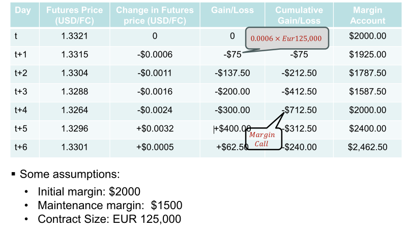
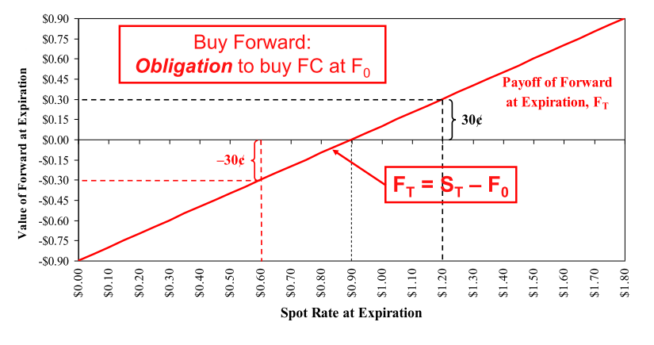
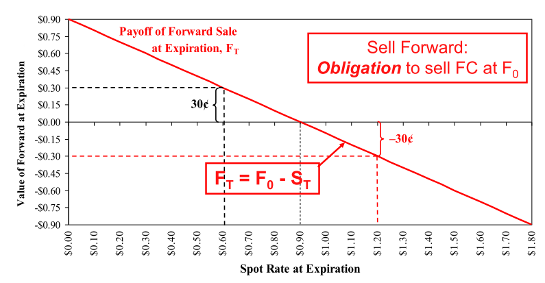
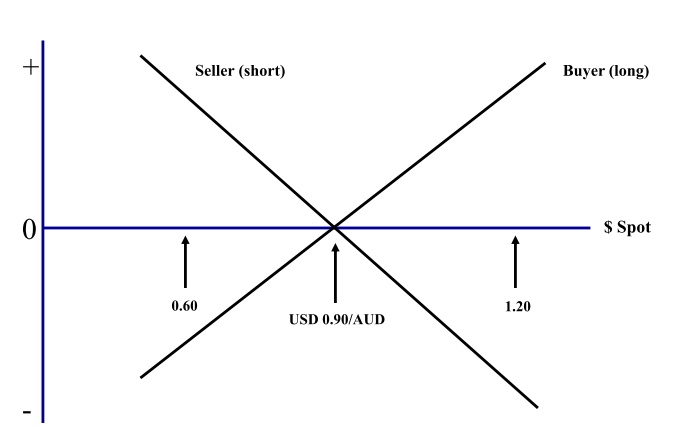

Lecture 4: Foreign currency derivatives
Derivatives:
-
These are financial instruments whose value depends on an observable value
- A financial asset, such as a stock price (or commodity or exchange rate), is used as an observable value. In such case, that asset is referred to as the underlying asset.
-
Derivatives include:
- Options: A contract that grants the holder the right, but not the obligation, to transact in an asset.
- Futures: A contract to buy or sell a commodity at a point in the future. Changes in prices in the commodity are settled daily.
- Swaps: A contract in which two parties exchange cashflows from different financial instruments.
-
Derives its value from some underlying assets
-
Commodities, financial assets, weather and currency derivatives etc.
-
minimise the risk of home currency depreciating against foreign currency
-
Swaps are typically long contracts (5-10 years)
Futures and Forwards
Currency forward and futures contracts both represent an obligation to buy or sell a certain amount of a specified currency some time in the future at an exchange rate determined now.
- NOTE: futures contracts trade on organised exchanges
| /- | Futures contracts | Forwards Contract |
|---|---|---|
| Markets: | Prices determined in centralised exchanges | Decentralised interbank market |
| Trading Hours: | Most trading during exchange hours | Open somewhere around the world |
| Contract size | Standardised sizes depending on currency | Standard size of $1m etc. and can be tailored |
| Contract maturity | Fixed delivery dates: 3rd Wed. of March, June Sept or Dec. | Fixed maturities (1, 3, 6 or 12 months) or can be tailored to specifications |
| Quotation: | American terms (USD/FC) | American (USD/FC) or European (FC/USD) |
| Settlement | Delivery of underlying fx is feasible, but almost never occurs. Position closed out by taking an offsetting position | Delivery of foreign exchange normally takes place |
| Security against default | Clearning houses stand behind traders | Assets of bank |
| Required collateral | Margin requirements ("Performance bond") | Deposit required if not standing relations with bank |
| Cash flows | Occur daily because of "market-to-market" feature | No cash flows until forward contract matures |
NOTES:
- Futures traded on CME group
- Future trade on a exchange and HAVE to be standardised.
- currency size for AUD is approx $125,000
- FC - foreign currency
- when you buy a futures contract, you have to open a margin account (collateral). They will tell you what the minimal amount in the margin
- In the case of a forward contract is unregulated - counterparty risk.
- with future contracts, counterparty risk is 0. Dealing with the clearing house. Changes are reflected on a daily basis
- Forward contract: Deposit might be required if you have no standing relationship with the bank
- Almost never take delivery of the future contract - just to hedge against moving price
Contract Specification - An example
Specification of the Australian Dollar futures contract (Chicago Mercantile Exchange)
| Contract size | AUD 100,000 |
|---|---|
| Quotation | USD per AUD |
| Delivery Month | March, June, September, December |
| Min. Price move | $0.0001 ($10,00) |
| Settlement Date | Third Wednesday of delivery month |
| Stop of Trading | Two business days prior to settlement date |
Mechanics Market to Market:

Value of Forward Purchase at Expiration
| Buy Forward | Sell Forward |
|---|---|
|  |  |
The trouble with forwards: 
- buyer of the contract of the upwards sloping line
- Temptation (if you are seller) if the price increases is very low. Contracts are rewritten every day
Options contracts
Options contracts give the option holder the right, but not the obligation to buy or sell a specified amount of the underlying asset (currency; stock) at a pre-determined price (exercise or strike price).
Call options
- buy the underlying asset
June 2024 109 call option on the Euro
Strike price
- the price at which the holder of the option may transact in the stock Underlying security
- The security to which this option applies
- stock of apple, currencies, etc. Call option
- Grants the hodler the right but not the obligation to buy the security at the strike price Expiration
- The point after which the option may no longer be used or exercised. Monthly option on a stcoker typically expire the third Friday of the month
Put Options
Put option
- Grants the hodler the right, but not the obligation to sell the security at the strike price
June 2024 109 put options on the Euro
Basics of Options
'The right, but not the obligation'
- Types of Options
- Call: gives the holder the right to buy
- Put: gives the holder the right to sell
- An American option gives the buyer the right to exercise the
option at any time between the date of writing and the expiration or
maturity date.
- American option will always be more expensive than an equivalent European option (of the same terms)
- A European option can be exercised only on the expiration date, not before.
- The exercise or strike price (X), which is the exchange rate at which foreign currency can be purchased (call) or sold (put).
- The premium, cost, price, or value of the option itself (paid in advance by the buyer to the seller).
- The underlying or actual spot exchange rate in the market.

- at any given time you can only buy options from six months
- Hedging: 600,000 contracts on the same size of the market.
Value of a call option at Expiration

Value of the put option at Expiration
- You might be interested in contracts that give you just the nice part of a forward sale
- That is, the right to sell at a pre-specified price when the currency trades below that price, without the obligation to sell at X when the currency is worth more.
- With such an option, you obtain no less than X per unit of foreign currency, and possibly more than X.
- In contrast, with a forward sale you always get X.
- A right to sell at X, without any obligation to do so, is called a put option, or put.

Example
- You buy a call on AUD at USD/AUD 0.5000 expiring on June 30 th .
- You are “long the call.”
- Counter party is the writer of the call – Has to deliver AUD at 50¢ should you exercise the call
- If
= USD/AUD 0.60 – Will exercise your right to buy AUD at 50¢ and save 0.10 - If
< USD/AUD 0.50 – Will not exercise, since it can be purchased in the spot market at a cheaper price
- If
Intrinsic and Time Value

Factors that Affect Options Prices
- current exchange rate (S) – as S
s, Call price s and Put price s - strike price (X) – as X s, Call price s and Put price s
- time to expiration (T) – as T s, the value s
- volatility of the exchange rate (
) –the higher the of the exchange rate, the greater the value - interest rates (iA and iB).
Swaps
- A swap is a contractual agreement to exchange periodic cash flows between two parties.
- Single currency interest rate swap
- One counterparty exchanges the interest payments of a floating-rate debt obligation for the fixed-rate interest payments of the other counterparty. Both debt obligations are denominated in the same currency.
- Cross-currency interest rate swap
- One counterparty exchanges the debt service obligations of a bond denominated in one currency for the debt service obligations of the other counterparty denominated in another currency.
NOTES:
- regular intermediate payments before maturity
- Same currency, exchanging cash flows between two different currencies
How do currency swaps work?
- Here, the MNC would enter into an agreement with a counter party to exchange fixed rate debt service in one currency for fixed rate debt service in another currency.
- Example: Suppose a U.S. MNC, Gaggle Co., wants to finance a ¥10 billion expansion of a Japanese plant.
- They could borrow dollars in the U.S. where they are well known and exchange dollars for yen. This results in exchange rate risk. OR
- They could borrow yen in the international bond market but pay a lot since they are not well known abroad. OR
- If Gaggle can find a Japanese MNC with a mirror-image financing need, both companies may benefit from a swap.

Swap Bank
- A swap bank is a generic term used to describe a financial institution that facilitates swaps between counterparties.
- The swap bank serves as either a broker or a dealer.
- A broker matches counterparties but does not assume any of the risk of the swap. The swap broker receives a commission for this service.
- Today most swap banks serve as dealers or market makers. As a market maker, the swap bank stands willing to accept either side of a currency swap.
NOTE:
- OTC market, will not know who is the counterparty
- swap bank is a broker or a dealer